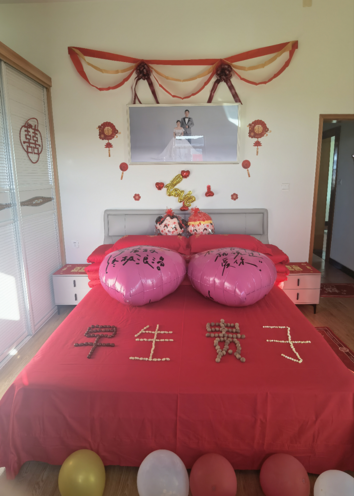
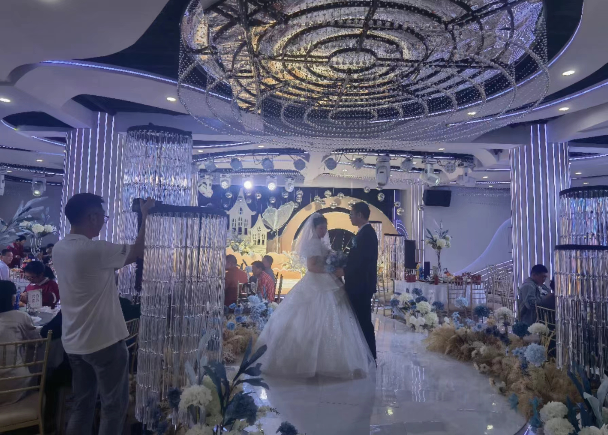

Folk Customs·Wedding
Recently, my brother is getting married, and we are helping with the preparations and participating in the wedding.
In this modern era, traditional folk customs and practices have indeed been simplified to a great extent and are no longer too strict. However, some unique characteristics are still preserved. It is worth highlighting that the entire process has now been significantly compressed in terms of time, so it can be finished within a day.
In the daytime, we have already set up the room in advance. We put up many “囍” characters, tied colorful ribbons, and placed balloons filled with shiny confetti. At the same time, we also arranged four Chinese characters made of fruits that spell out “早生贵子” (meaning “May the couple have children soon”). The four kinds of dried fruits is jujube, peanut, longan and lotus seed.In Chinese, the pronunciation of these four characters is the same as the names of these four ingredients. 
Indeed, it’s a bit unusual that the entire following process started from midnight.
In the evening, the groom first went to the bride’s home after worshiping ancestors. The bride’s family would open the door for the groom only after receiving red envelopes. Then, the bride and groom played many mini-games together, such as ring toss, which helped strengthen their bond. In addition to these activities, there are also two meal breaks to prevent exhaustion. During the period, we captured lots of footage, and edited it into a video to be shown at the wedding.
Next, it’s the turn to have the ceremony at the groom’s side. Ten relatives from the husband’s side went together to fetch the bride. At the entrance of the house, many firecrackers were set off to welcome. Then, the couple walked on the red carpet, scattered with flower petals and reeds. In the dialect here, reeds have a homophone related to wealth and prosperity. After that, it is the time for the bride family to display the dowry, which includes several quilts, cash (packed in bright red suitcases) and other stuff. An indispensable traditional ritual is the three bows. After completing these rituals, the newlyweds were sent to the bridal chamber, where the groom lifted the red veil and have sweet jujube soup and sticky rice balls. The homophones symbolize sweetness and togetherness.
The next ritual, traditionally performed several days later, is the “returning home” ceremony, which is the time for visiting the bride’s parents. However, due to simplification, it was now conducted in the afternoon of the same day.
Finally, it is time to host the banquet and entertain the guests. At the restaurant, a host is hired to preside over the ceremony, and then the usual set of procedures followed.

Wish my brother and his wife love for all seasons!